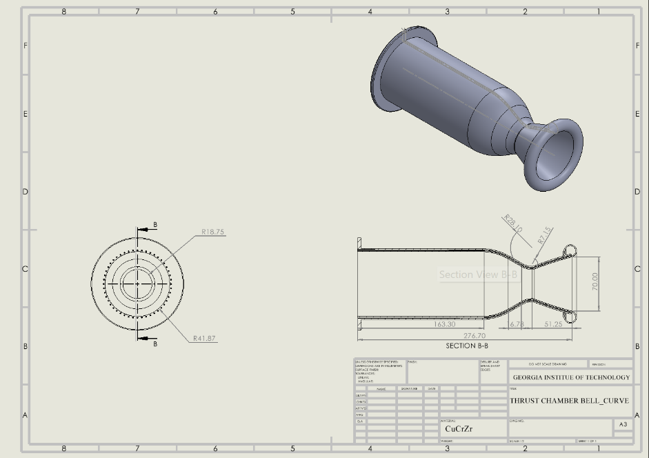
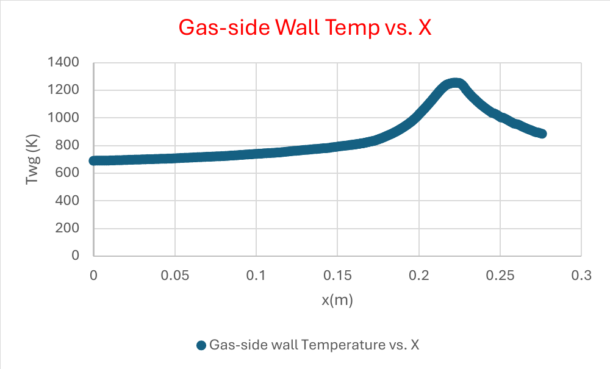
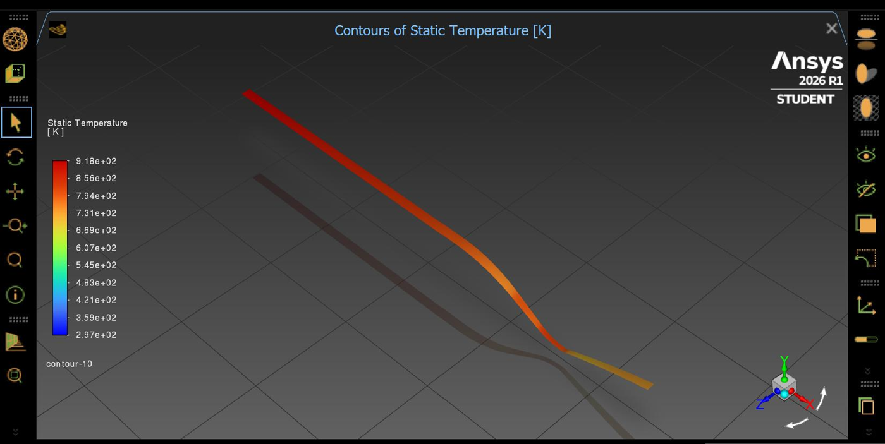
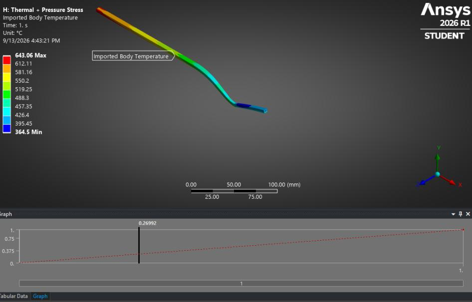
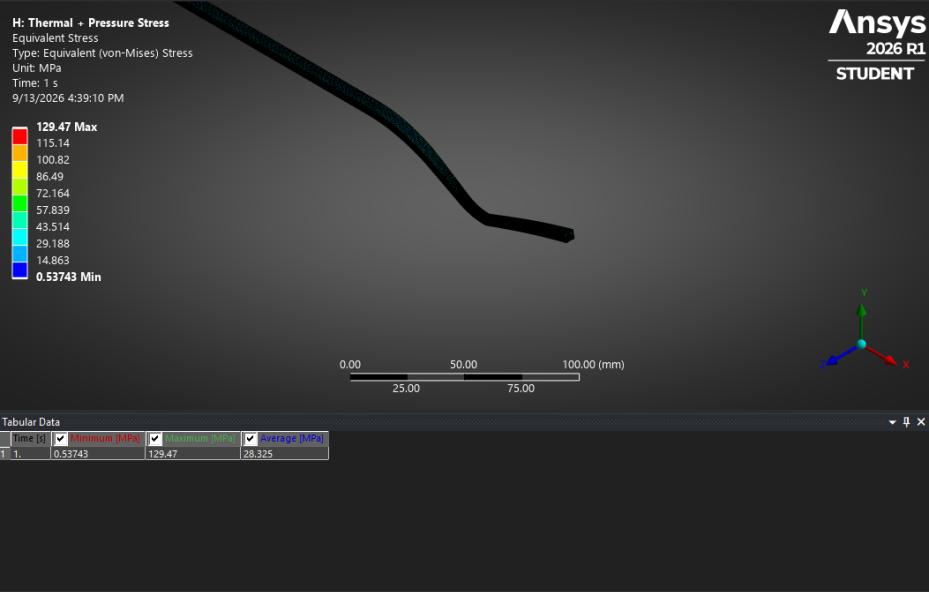

Regeneratively Cooled 3 kN LOX/Ethanol Thrust Chamber
A preliminary thermal-hydraulic and structural study asking whether a small LOX/ethanol engine can be cooled by its own fuel alone.

Combustion temperatures above 3,000 K exceed the melting point of most chamber alloys. The study evaluates whether single-phase ethanol regenerative cooling alone can maintain a 3 kN, 20 bar chamber within its thermal limit while keeping the coolant subcooled, the pressure drop under 2 bar, and the structural factor of safety above 1.3.
- Size the engine with NASA CEA, RPA and analytical methods
- Build a 1D cooling model in MATLAB
- Check it with 3D conjugate heat transfer in Fluent
- Load the chamber thermally and structurally in Mechanical
All preliminary requirements were satisfied, demonstrating feasibility of ethanol-only regenerative cooling at the design point. The limited subcooling and structural margins identify the priorities for further optimization.
Combustion Analysis and Chamber Sizing
NASA CEA and RPA set the operating point: 20 bar chamber pressure, O/F 1.1. Analytical sizing then laid out an 80% Rao bell nozzle with an 18.6 mm throat radius and an expansion ratio of 3.49.
I chose CuCrZr for the chamber because its high thermal conductivity moves heat to the coolant quickly, and modeled it with temperature-dependent properties for its aged condition.

One-Dimensional Regenerative Cooling Model

The model marches along the chamber using the Bartz correlation on the hot-gas side and internal-flow correlations in 48 square 1.5 × 1.5 mm channels. At each station it predicts heat flux, wall temperatures, coolant temperature rise, Reynolds number, pressure loss and how close the ethanol is to boiling.
Result: peak wall temperature below the CuCrZr limit, 1.21 bar pressure drop, fully turbulent flow (minimum Re 8,303), and a 5.25 K margin before the ethanol would boil.
Conjugate Heat-Transfer Verification
To verify the 1D model against a higher-fidelity solution, after a coarse/medium/fine mesh-independence study, I ran a conjugate heat-transfer simulation of one channel and its surrounding wall. Fluent resolves conduction through the ribs between channels, which the 1D model averages out, so it predicts a cooler wall while confirming the throat is the hot spot.

| Quantity | 1D model | Fluent |
|---|---|---|
| Max gas-side wall temp | 1254.9 K | 916.2 K |
| Max coolant-side wall temp | 795.3 K | 902.7 K |
| Coolant outlet temp | 454.5 K | 507.1 K |
| Coolant pressure drop | 1.21 bar | 1.43 bar |
Thermal-Structural Analysis
I imported the Fluent temperature field into ANSYS Mechanical and added gas-side pressure loads. The contour's peak stress sat on a sharp edge, a numerical singularity rather than a real stress, so I placed three probes just off the edge instead. Their average, about 105 MPa at 540 °C, against CuCrZr's 150 MPa yield at that temperature, gives a factor of safety of 1.43.


Results Against Requirements
| Requirement | Target | Result | Status |
|---|---|---|---|
| Wall temperature | Below 1,343 K | 1,254.9 K | Met |
| Coolant pressure drop | ≈ 2 bar max | 1.21–1.43 bar | Met |
| Coolant stays liquid | Below local saturation | 5.25 K margin | Met, thin margin |
| Structural factor of safety | ≥ 1.3 (1.5 preferred) | 1.43 | Met, below preferred |
Next: optimize channel geometry and coolant flow for more margin, then move to transient heating, two-phase flow, creep, fatigue and manufacturing effects before any hardware is built.